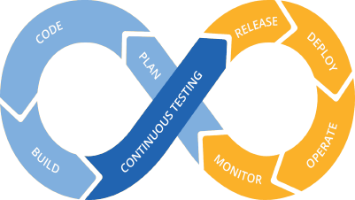

Prácticas o Técnicas DevOps

Entrega Continua

Comúnmente nombrado como CI. La integración continua es una práctica de desarrollo de software en la que los desarrolladores fusionan mediante combinación los cambios de código en la rama de código principal con frecuencia. En la integración continua se utilizan pruebas automáticas, que se ejecutan cada vez que se hace “commit” de código nuevo. De este modo, el código de la rama principal siempre es estable. En la actualidad, Internet ofrece una gran variedad de herramientas para la integración continua. Todas tienen como objetivo ayudar al desarrollador en la implementación de esta metodología, y lo hacen de diferentes modos y con la ayuda de características distintas.
Entrega Continua

Continuous Deployment o despliegue continuo sucede cuando cada cambio en la rama principal que pasa las pruebas CI se lleva a producción sin la necesidad de la interacción humana. Como consecuencia podemos realizar varios despliegues al día que proporcionan rápido feedback al equipo de desarrollo.
Testing Continuo
Continuous Deployment o despliegue continuo sucede cuando cada cambio en la rama principal que pasa las pruebas CI se lleva a producción sin la necesidad de la interacción humana. Como consecuencia podemos realizar varios despliegues al día que proporcionan rápido feedback al equipo de desarrollo.